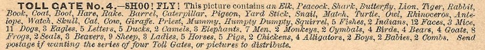

Saturday, August the 30th, 2014
back to: title, date or indexes
Here is another cutting from Poppy Nisbet. (As before, click to enlarge.) There is something utterly compelling about this list. Any sense of vague coherence it may have collapses, beautifully. It cries out to be incorporated into a piece of prose, and that is the goal I have set for myself tomorrow.
